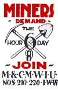

Never Again? Sago Just the Latest Coal Disaster
Submitted on Fri, 02/03/2006 - 3:27am
By Richard Myers - Industrial Worker, February 2006
One miner is injured in an explosion and will soon die. Twelve miners walk through the mine without necessary information or direction, their lives also in mortal danger.The communication system has failed and ventilation controls were damaged during an explosion, allowing the buildup of dangerous gases. The emergency response is deficient, it fails to protect and evacuate miners at risk.
But this was not the Sago Mine in West Virginia. This was Brookwood, in Alabama, September of 2001. There had been a methane explosion, injuring four miners. Three were carried to safety. A second, larger explosion took the lives of the miner immobilized in the first blast, and twelve would-be rescuers. It was one disaster in an endless thread of disasters, a continuing calamity across the ages.
In 1815 a young coal miner transcribed his last thoughts for his mother in the Heaton Main Colliery, near Newcastle-upon-Tyne. "Fret not, dear mother, for we were singing while we had time, and praising God."
Today we read a bittersweet note penned by helmet's glow, testimonial to another bitter heartbreak: "Tell all I'll see them on the other side. It wasn't bad. I just went to sleep." To the mothers, the families, the close-knit coal communities, we're two centuries on and nothing's changed.
Unlike Sago, the mine at Brookwood was a union mine. The United Mine Workers of America (UMWA) conducted an extensive investigation of the Brookwood disaster, reportedly more thorough than that conducted by the Mining Safety and Health Administration (MSHA).
The UMWA report on Brookwood found: 1) a faulty mine emergency evacuation plan; 2) a failure of the mine operator to adequately control explosive coal dust; 3) a failure to implement sufficient roof control measures; 4) a failure to effectively ventilate the mine; and 5) a failure to properly inspect for, record, and correct hazardous conditions.
This brings us to the Sago Mine in West Virginia, where twelve miners died and one was seriously injured resulting from the January 2nd explosion. The joint state and federal investigation at Sago is still underway as this article goes to the web. However, consider what we already know: 1) On at least two occasions since August, MSHA cited Sago management for not properly maintaining escapeways for miners; 2) the Sago Mine had been cited in September for coal dust and coal pieces piled nearly three feet deep. On December 14, less than three weeks before the disaster, Sago was cited again for loose coal piled 29 inches deep, and coal dust on the mine roof and walls. As at Brookwood, MSHA found Sago had done a poor job of spreading limestone material meant to keep coal dust from igniting; 3) two safety violations were issued in August following roof collapses at Sago that seriously injured one miner, with 11 roof collapses recorded during the past year; 4) nine times in the past year, the Sago Mine was cited for failing to properly enact a mine ventilation plan. Three of those violations were considered "significant and substantial;" and 5) pre-shift examinations at Sago were not always done properly. In one case a MSHA inspector named a Sago foreman in his formal report, declaring that individual "has engaged in aggravated conduct by his failure to record and take action on a known hazard."
In short, all the types of failures and violations recorded by the United Mine Workers' investigation of Brookwood appear to have been in play at Sago as well.
The Federal Mine Safety and Health Act of 1977 declares that, "the first priority and concern of all in the coal or other mining industry must be the health and safety of its most precious resource--the miner." Over the years, mining safety in the United States has improved. Annual death counts that numbered in the thousands a century ago are now tallied in the scores. Yet many of the deaths that continue to occur are preventable if coal operators simply choose to follow the rules.
Alas, the safety of miners (and other members of coal communities) is frequently sacrificed to corporate greed. The reported fatality numbers don't factor in the thousands of deaths from black lung disease. Nor do they include the fourteen West Virginians who have been killed during the past three years by floods and mudslides triggered by mountaintop removal, nor the approximately fifty Kentuckians killed by overloaded coal trucks.
Wilbur L. Ross, head of International Coal Group (ICG) which owns the Sago mine, does not perfectly fit the stereotypical mold of the conservative business tycoon. He opposes free trade and eschews the off-shoring frenzy of capitalist colleagues, believing that the U.S. should maintain its core industries such as manufacturing. Ross has supported Democratic politicians, calling John Kerry a friend and raising funds for Bill Clinton. Ross even supports national health care, declaring, why should business pay for it!
Ross specializes in corporate welfare and bankruptcy law. Most investors abruptly shed any stock which smacks of corporate failure, but Ross is a prototypical vulture investor, seeking out distressed companies ripe for the picking. Never waiting for his targets to hit bottom, Ross gains control as a company is taking on water, buying up 25 to 50 percent of the company's debt before it crashes onto the shoals of financial disaster. For Wilbur Ross, bankruptcy court becomes the perfect sledge hammer for smashing union contracts, while offloading pension and healthcare liabilities onto the taxpayers.
The federal agencies which insure these programs, of course, typically pay benefits at a greatly reduced level, if benefits are granted at all. Who cares that mining families are plagued with black lung disease? What does it matter that Appalachian families need health care for sickly children raised on silt- and slurry-polluted stream water? In his search for riches, Wilbur Ross leaves devastated families in his wake by the hundreds of thousands. But his own fortunes are looking up nicely, thank you.
When he recently sold his steel holdings, Ross increased his investment fourteen times over in two years. Coal looks just as promising. Coal prices doubled in the past couple of years as utilities switched from natural gas to coal generation of electricity. The current price hovers around $57 per ton, with $22 billion mined in 2004. What is at stake in West Virginia and elsewhere is simple greed, the right of the corporation to be unfettered by unnecessary impediments in the drive for profits.
Whenever disaster strikes a mine in some remote coal town, management spins like a top for the media. The Sago explosion was an "act of God," the result of a lightning strike they declared. Certainly no one could blame the corporation for such an unexpected calamity. Hundreds of media outlets dutifully passed on this explanation. Yet who was identified as a witness to this bolt from the heavens? No one. While conceding that lightning sometimes represents a hazard, and while it remains a possible explanation for the explosion, experts have cast doubt upon the story.
Then we heard that ICG had taken over the Sago Mine a matter of weeks before the disaster, and therefore should escape blame. The sale had indeed been finalized this past November. But this story is misleading-- Sago is owned by Anker, and Ross began investing seriously in Anker in 1999. He joined the Anker board of directors in 2001, already controlling 47 percent of the company, making him by far the largest shareholder. Anker filed for bankruptcy protection in 2002, a typical evolution for a Wilbur Ross target.
In another apparent deception, ICG Vice President Gene Kitts declared there had been recent changes in mine management. This appears to be another attempt to evade responsibility for safety violations, but the West Virginia Gazette cast doubt on this story. "Officials from the state Department of Environmental Protection . . . say that DEP inspectors have not noticed any change in on-the-ground mine managers," they reported.
While ICG offers spin, they've relied upon MSHA to keep their day to day operations under wraps. On January 11 California Congressman Henry Waxman sent a letter to Labor Secretary Elaine Chao decrying the 2004 decision by the Bush Administration to block access to mining reports filed by mine inspectors. "This unwarranted secrecy may protect the mining industry from embarrassing disclosures," wrote Waxman, "but it undermines accountability and mine safety . . . [MSHA's] secrecy policy limited public disclosure about the [Sago] mine's violations . . . " Waxman further noted that the policy had been used to shield "accusations, threats, and profane invective" by company executives against MSHA officials.
But secrecy isn't the only impact of Bush Administration policies on the safety of coal miners. Fines assessed by MSHA have dwindled over the years. Jack Spadaro, a retired MSHA inspector and engineer in West Virginia, was granted federal whistle-blower status after he was demoted four years ago for trying to enforce safety laws too aggressively. He was quoted by the Washington Post, declaring that "the managers in Washington won't let [inspectors] close a mine" that fails to comply with enforcement requirements. The Washington Post continues, "MSHA's first leader under President Bush, David D. Lauriski, was a former coal industry executive who advocated a less confrontational style and gave inspectors a less-intimidating job title: 'compliance assistance specialists.'" Lauriski left his post after accusations of manipulating dust regulations to directly benefit his former employer.
Of 208 total safety violations in the past year, MSHA cited the Sago Mine sixteen times for infractions that could have caused fires or explosions. The agency assessed fines of only $1,221 for these violations. According to the Washington Post, the largest single fine was just $440, "about 0.0004 percent of the $110 million net profit reported last year" by ICG. Considered another way: Howard Stern arguably didn't endanger any lives, but his fine for a single instance of indecency was more than a thousand times greater.
In an environment of deregulation, even fines that MSHA does assess are often reduced; the fine against the operator at Brookwood, where thirteen miners died, was dropped from $435,000 to $3,000 when a judge ruled MSHA failed to prove wrongdoing.
Eugene Oregon's Register-Guard newspaper reports that the Bush administration proposed reducing MSHA's budget and easing restrictions on the amount of coal dust to which miners are exposed, and "its nominee for the post of agency director has operated mines with injury rates two times the national average." Meanwhile, the website opensecrets.org reports coal industry political contributions of $2.3 million in the 2004 election cycle, with more than $2 million of that amount going to Republicans.
Democratic congressional aides say that MSHA "has shed about 120 coal-industry enforcement jobs since 2002," according to the Boston Globe. "After President Bush took office in 2001, the administration pulled back a series of regulations proposed under President Clinton, including the requirement to upgrade miners' emergency respiratory devices and to add more mine rescue teams."
Rescue teams have become an issue, because Sago had no emergency rescue team on site. Even after the first team was assembled, they were required to wait for a backup team to arrive before they could enter the mine, greatly delaying the initial rescue attempt. The West Virginia Gazette-Mail complains, "Every coal mine in the country is supposed to have at least two teams, either on site or on contract nearby. As of 2004, there was only one team for every four underground coal mines in the country . . . As recently as three years ago, an MSHA study group started during the Clinton administration drafted a plan to improve MSHA's mine rescue program. In December 2002, the Bush administration ended that effort, despite warnings from industry and labor officials." The Roanoke Times observes that, "Instead of beefing up the system, rescue teams maintained at local MSHA offices like the one in nearby Morgantown, W.Va., were phased out in favor of a single MSHA-wide emergency crew." They quote former MSHA director Davitt McAteer, "The first rule of mine rescue is that you have to be quick.... It should not take 12 hours to get teams together."
Joining in a chorus of platitudes, Labor Secretary Chao called for an investigation that will "determine the cause of this tragedy and will take the necessary steps to ensure that this never happens again." Comforting words, repeated at most every disaster. David G. Dye, the acting Assistant Secretary of Labor for Mine Safety and Health, used nearly identical words to declare, "We will take every step-- including looking at our own performance-- to make sure this tragedy never happens again." But looking at their own performance is one of the coal industry watchdog's activities most open to criticism. USA Today reported on the difference between the transportation industry, where the National Transportation Safety Board's investigative role is completely separate from the Federal Aviation Administration's regulatory function. Former NTSB executive director Peter Goelz is quoted, "It's bad policy. There's a natural hesitance on the part of the regulator to believe that its own regulations and its own oversight would be anything other than acceptable." USA Today also interviewed Tony Oppegard, an MSHA senior adviser from 1998 to 2001. "Oppegard says interviews can be 'intimidating' because mine company officials watch as MSHA investigators question miners," the paper reported. 'The only [reason] for a coal company to sit in on an accident investigation interview is to intimidate the witnesses,' Oppegard told them.
Some details of the current investigation have already surfaced, and these likewise raise questions about regulations and practices. Apparently indications point to an explosion in a former section of the mine that had recently been sealed. A story in the West Virginia Gazette-Mail states that a concrete seal is mandated. The United Mine Workers insist that only a concrete seal offers sufficient protection. Yet an inspector for the state of West Virginia approved sealing the closed section of the mine with Omega blocks, a light weight plastic foam product. According to some accounts the pressure resistance of the foam blocks is one-fourth that required by MSHA regulations.
So we have a joint investigation by MSHA, which is criticized for investigating its own regulatory practices, and the state of West Virginia, which may have a conflict of interest over its own suspect regulatory decision on seals.
In the aftermath of heartbreaking confusion over rescuer's communications, with "one alive" being interpreted as "all alive," and a perplexing delay in setting the record straight, ICG CEO Ben Hatfield may have created heartache anew with the January 9th observation that there was nothing except smoke and bad air preventing the miners from escaping the mine. "Sadly, they could have come out and made it to safety," Hatfield told USA Today. Footprints indicate the miners made an effort to flee, but turned back.
With Hatfield raising the issue, we can speculate that some very simple precautions could indeed have kept the miners alive. If there was more oxygen in the mine, more of the "self-rescuers" that buy the miners a little time, they may have lived. If there was a backup communications system, with each of the miners issued an inexpensive radio phone, they may have lived. If there was a secondary exit, the miners may have lived.
A mining industry employee with the nickname Devilstower has anonymously blogged at the website Daily Kos about the normal state of safety supplies in safer mines, and the way it should be even at non-union mines like Sago. "Stockpiles of [rebreathers], along with lights, water, food, and more safety gear, are located throughout the mine. On a panel, there should be a cache on the [automated coal digger] itself, and another within a couple hundred feet. Additional caches are then located along the entries. Over the years, many miners have walked out, moving from one cache to another until they reached safety." Sounds downright simple, and by the CEO's own words, it should have worked. With the experience of hundreds of thousands of coal miners having lost their lives over the years, why didn't ICG provide Sago miners with these simplest of necessities? Why haven't they followed the common sense recommendations of the United Mine Workers?
Although members of the UMWA assisted with the rescue efforts, it seems a certainty they will not be granted the investigative access to the Sago Mine that they enjoyed at Brookwood. On the other hand West Virginia's investigative team includes state delegate Mike Caputo, D-Marion, who is a ten year representative of the UMWA, and several other delegates that hail from coal mining families. In time we shall see what their investigation reveals.
But at Sago, the greatest tragedy must be this: just a little foresight and planning, together with minimal expense, might have saved the lives of all thirteen miners.
Those trapped in the darkness have been known to pick away at the walls of their entombment, or to sit quietly and praise God, according to their proclivities. The rest of us should raise hell.
Richard Myers is co-editor and one of the authors of Slaughter in Serene: the Columbine Coal Strike Reader, a book about a bloody strike in the Colorado coal fields.